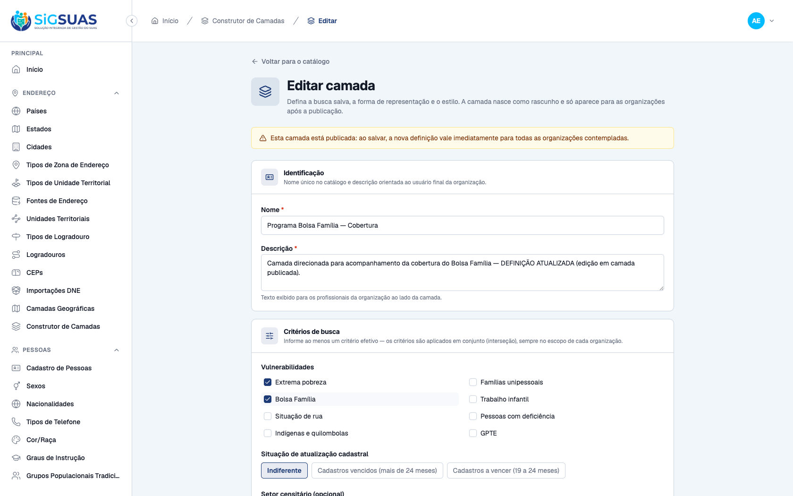
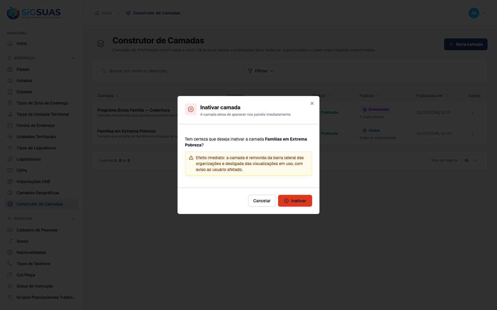
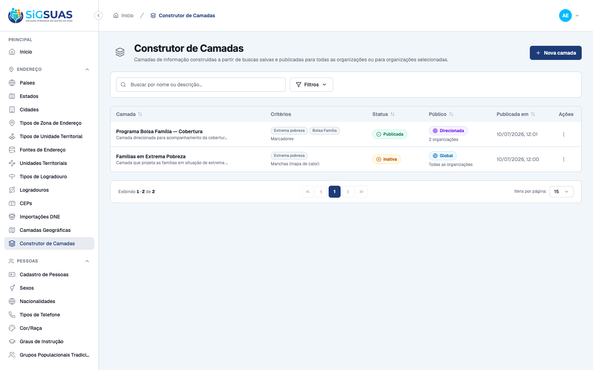
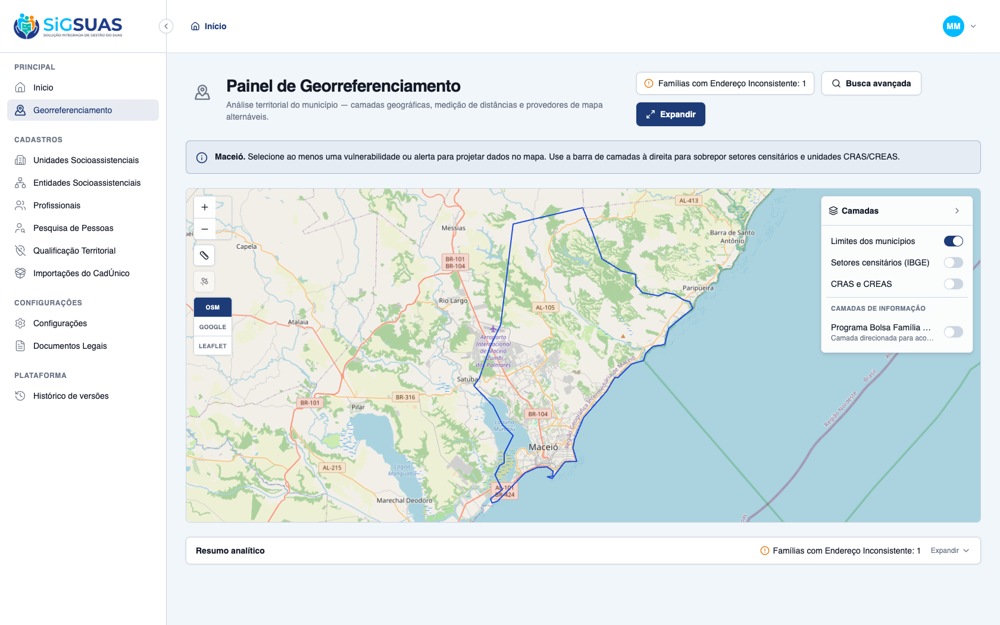
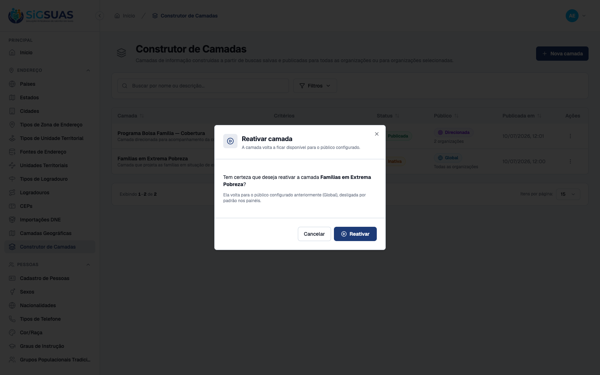
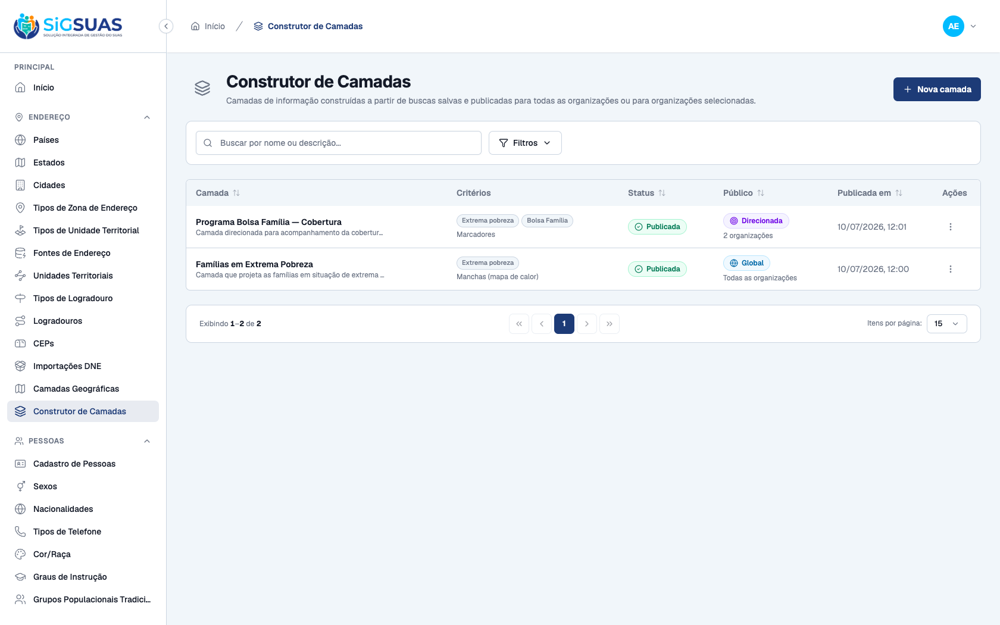
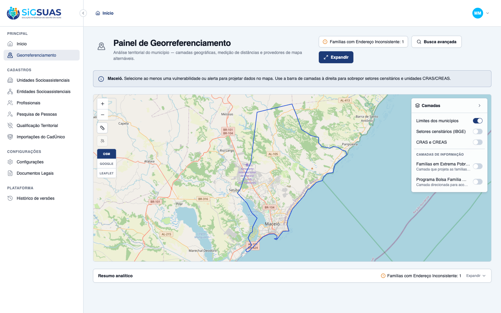
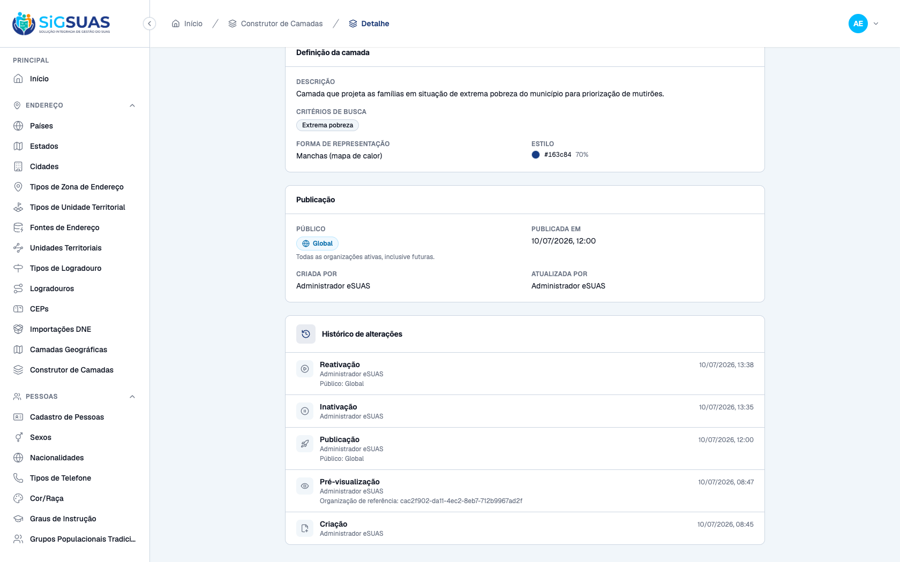

Relatório de Critérios de Aceite — HU #9885 Gerenciar o ciclo de vida das camadas
Resumo
Os 4 critérios de aceite da HU #9885 sobre o ciclo de vida das camadas do Construtor de Camadas (rota admin /geo-layers, com efeito no Painel de Georreferenciamento /georreferenciamento do tenant no client) foram verificados dirigindo os apps reais (admin e client) no navegador e reforçados pela suíte automatizada — todos ATENDIDOS. CA47: como Administrador, editando a descrição e os critérios de busca de uma camada PUBLICADA (o form avisa "ao salvar, a nova definição vale imediatamente para todas as organizações contempladas") e salvando, a nova definição passa a valer — confirmado no painel do tenant, que já exibe a descrição atualizada. CA48: ao inativar uma camada publicada e em uso por um tenant, o diálogo avisa o efeito imediato; a camada some da barra lateral do painel do tenant e, na reconciliação, o usuário afetado recebe o toast "A camada ... não está mais disponível — ela foi removida ou inativada pelo administrador.". CA49: ao reativar uma camada inativa, ela volta ao público configurado anteriormente (Global) e reaparece na barra lateral do tenant desligada por padrão (aria-checked=false). CA50: o detalhe da camada exibe o "Histórico de alterações" com cada ação (Criação, Pré-visualização, Publicação, Inativação, Reativação), o autor (Administrador eSUAS) e a data/hora — espelhado no activity_log. Cobertura automatizada: Pest GeoLayerControllerTest (26 testes/150 asserções) cobre a atualização da definição corrente de camada publicada (CA47), a inativação e a rejeição de transições inválidas (CA48/RN06), a reativação de volta ao público configurado com revalidação RN03 (CA49), e o detalhe com o histórico auditável completo (CA50).
| CA | Critério | Status |
|---|---|---|
| CA47 | Edição de camada publicada (nova definição vale para os tenants contemplados) | ATENDIDO · navegador |
| CA48 | Inativação com efeito imediato (remoção da barra lateral + aviso ao usuário) | ATENDIDO · navegador |
| CA49 | Reativação (volta ao público configurado, desligada por padrão) | ATENDIDO · navegador |
| CA50 | Rastreabilidade das ações (ação, autor e data/hora) | ATENDIDO · navegador |
CA47 — Edição de camada publicada (nova definição vale para os tenants contemplados) ATENDIDO · navegador
Critério (Gherkin): Dado que uma camada está publicada, Quando edito sua descrição ou seus critérios de busca e salvo, Então a nova definição passa a valer para todos os tenants contemplados.
Como foi testado: Como Administrador, aberta a edição da camada PUBLICADA "Programa Bolsa Família — Cobertura": alterada a descrição e adicionado um 2º critério (Bolsa Família, além de Extrema pobreza) → Salvar alterações.
- O form da camada publicada exibe o aviso: "Esta camada está publicada: ao salvar, a nova definição vale imediatamente para todas as organizações contempladas."
- PUT /geo-layers/{uuid} responde 200; a camada permanece <b>Publicada</b> com a definição corrente atualizada (criteria = extreme_poverty + receives_pbf).
- No painel do tenant Maceió Geo (contemplado), a camada já exibe a descrição atualizada ("…DEFINIÇÃO ATUALIZADA…") — a nova definição valeu imediatamente.


CA48 — Inativação com efeito imediato (remoção da barra lateral + aviso ao usuário) ATENDIDO · navegador
Critério (Gherkin): Dado que uma camada está publicada e em uso por um tenant, Quando eu a inativo, Então ela é removida da barra lateral dos tenants e desligada das visualizações em uso, com aviso ao usuário afetado.
Como foi testado: No painel do tenant Maceió Geo, ligada a camada global "Famílias em Extrema Pobreza" (em uso). Em seguida, como Administrador, ação Inativar dessa camada → confirmação. De volta ao painel do tenant, reconciliação do catálogo de camadas.
- O diálogo de inativação avisa: "Efeito imediato: a camada é removida da barra lateral das organizações e desligada das visualizações em uso, com aviso ao usuário afetado."
- A camada passa a Status <b>Inativa</b> no catálogo (POST /geo-layers/{uuid}/inactivate).
- No painel do tenant, a camada <b>desaparece da barra lateral</b> (some da seção "Camadas de informação") e é desligada; o usuário afetado recebe o <b>toast</b>: "A camada \"Famílias em Extrema Pobreza\" não está mais disponível — ela foi removida ou inativada pelo administrador."



CA49 — Reativação (volta ao público configurado, desligada por padrão) ATENDIDO · navegador
Critério (Gherkin): Dado que uma camada está inativa, Quando eu a reativo, Então ela volta a ficar disponível para o público configurado, desligada por padrão nos painéis.
Como foi testado: Como Administrador, na camada inativa "Famílias em Extrema Pobreza" (menu com apenas Ver detalhes / Editar / Reativar — RN06), ação Reativar → confirmação. Em seguida, reaberto o painel do tenant Maceió Geo.
- O diálogo de reativação confirma: "Ela volta para o público configurado anteriormente (Global), desligada por padrão nos painéis."
- A camada volta a Status <b>Publicada</b> / público <b>Global</b> (inactivated_at limpo) — POST /geo-layers/{uuid}/reactivate.
- No painel do tenant, a camada <b>reaparece</b> na barra lateral <b>desligada por padrão</b> (aria-checked=false).



CA50 — Rastreabilidade das ações (ação, autor e data/hora) ATENDIDO · navegador
Critério (Gherkin): Dado que realizei qualquer ação sobre uma camada (criação, edição, publicação, alteração de público, inativação ou reativação), Quando o registro de auditoria é consultado, Então constam a ação, o autor e a data/hora.
Como foi testado: Aberto o detalhe da camada "Famílias em Extrema Pobreza" → seção Histórico de alterações.
- O histórico lista cada evento do ciclo de vida com <b>ação</b>, <b>autor</b> e <b>data/hora</b>: Reativação (10/07/2026, 13:38 · Administrador eSUAS), Inativação (13:35), Publicação (12:00), Pré-visualização (08:47) e Criação (08:45).
- Espelho no backend (anexo): activity_log registra os eventos created / previewed / published / inactivated / reactivated (subject GeoLayer) com causer e timestamp — a mesma fonte consumida pelo GeoLayerHistoryList.

Anexo — Cobertura automatizada — Pest GeoLayerControllerTest (CA47–CA50, RN06–RN08)
=== Cobertura automatizada — GeoLayerController (CA47-CA50 / RN06-RN08) === (executado ao vivo em 10/07/2026 contra a stack Sail) PASS Tests\Feature\Api\Manager\GeoLayerControllerTest ✓ it creates a layer as draft with normalized criteria and it shows u… 0.55s ✓ it blocks creation without name or without any criterion (CA38) 0.03s ✓ it rejects criteria outside the panel vocabulary (P3) 0.02s ✓ it blocks a duplicated name case-insensitively, but frees it after… 0.03s ✓ it filters the catalog by status and audience (CA51) 0.04s ✓ it shows the layer detail with audience tenants and the full audit… 0.04s ✓ it updates the current definition of a published layer (CA47) 0.02s ✓ it keeps the unique name rule on update, ignoring the layer itself… 0.03s ✓ it does not expose DELETE — the missing verb answers 405 (P5/RN06) 0.02s ✓ it blocks publish while BOTH national bases are not homologated (CA… 0.03s ✓ it publishes globally: empty pivot means every active tenant, prese… 0.03s ✓ it publishes to selected tenants only (CA43/RN04) 0.03s ✓ it requires the tenant list when publishing to a selected audience 0.03s ✓ it rejects publishing a layer that is not a draft (RN06) 0.02s ✓ it changes the audience of a published layer with immediate pivot s… 0.03s ✓ it only allows changing the audience of published layers (RN06) 0.02s ✓ it inactivates a published layer and rejects invalid transitions (C… 0.03s ✓ it reactivates an inactive layer back to the CONFIGURED audience (C… 0.03s ✓ it revalidates the RN03 gate on reactivation (CA44/CA49) 0.02s ✓ it rejects reactivating a layer that is not inactive (RN06) 0.02s ✓ it previews the layer under the single reference tenant — WYSIWYG,… 0.05s ✓ it never leaks another tenant of the same municipality into the pre… 0.04s ✓ it rejects the preview when the reference tenant has no homologated… 0.02s ✓ it requires a valid tenant_uuid on preview 0.02s ✓ it gives the admin_operador read-only access — every write is 403 (… 1.12s ✓ it gives the ADMIN every geo-layers ability through the automatic h… 1.06s Tests: 26 passed (150 assertions) Duration: 3.81s